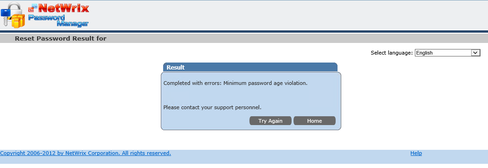
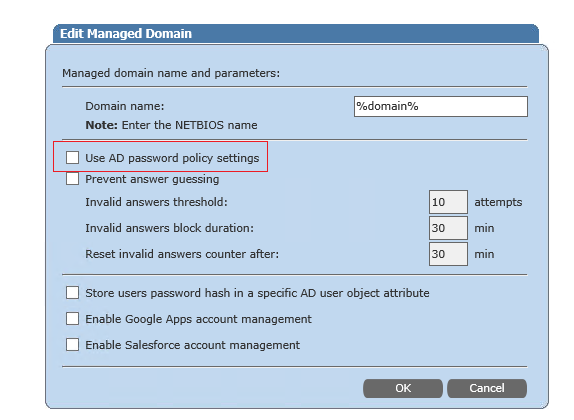
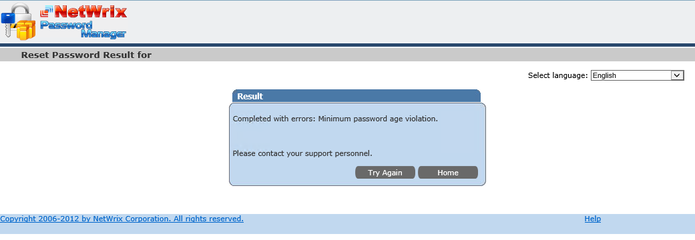
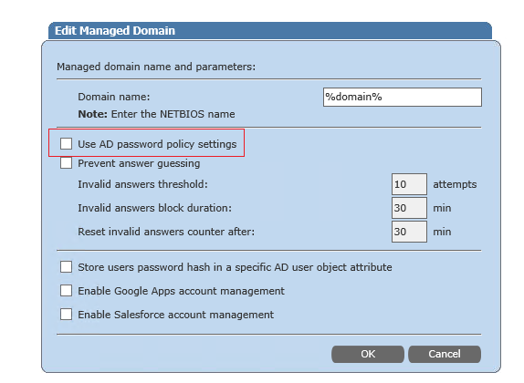

A user receives the Minimum password age violation error when trying to
reset his password via Password Manager.

The error indicates that their password cannot be reset due to the Domain Password Policy limiting Minimum password age. With the current product architecture, a users password is not reset directly, but it is actually a two-step procedure The password is first reset to a random value, and then a regular password change on behalf of a user is performed. This is done to apply a password policy to the new password, otherwise, it could be possible to set any password. By design, a user cannot reset their password more often than they are allowed to change it by the policy. However, it is possible to bypass this by making Password Manager ignore Minimum length, Minimum password age and Password history policies. To do this go to the Password Manager Administrative portal, Navigate to Domains - Edit corresponding domain

and clear the Use AD password policy settings checkbox

Please note that complexity requirements will still be applied.

The error indicates that their password cannot be reset due to the Domain Password Policy limiting Minimum password age. With the current product architecture, a users password is not reset directly, but it is actually a two-step procedure The password is first reset to a random value, and then a regular password change on behalf of a user is performed. This is done to apply a password policy to the new password, otherwise, it could be possible to set any password. By design, a user cannot reset their password more often than they are allowed to change it by the policy. However, it is possible to bypass this by making Password Manager ignore Minimum length, Minimum password age and Password history policies. To do this go to the Password Manager Administrative portal, Navigate to Domains - Edit corresponding domain
and clear the Use AD password policy settings checkbox

Please note that complexity requirements will still be applied.